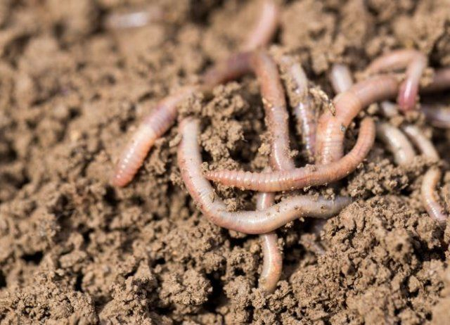
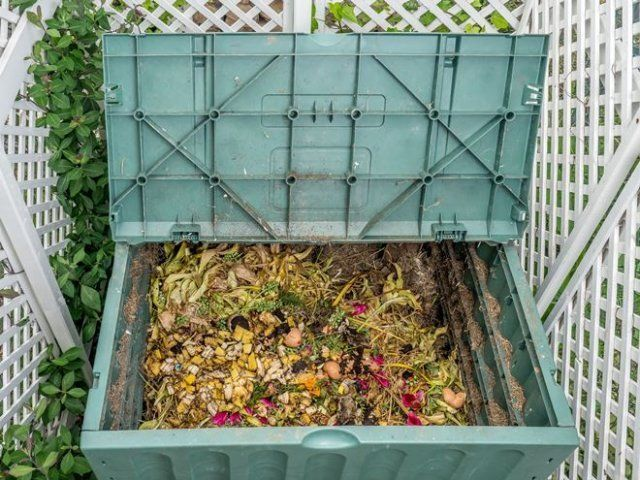
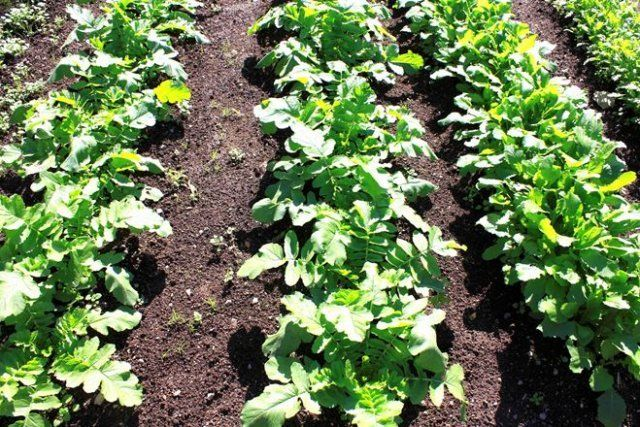
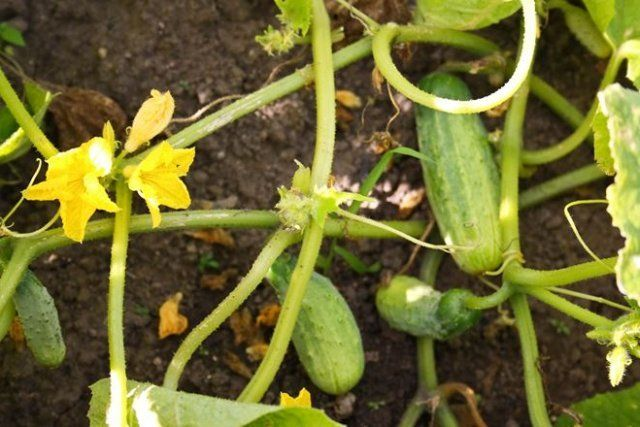
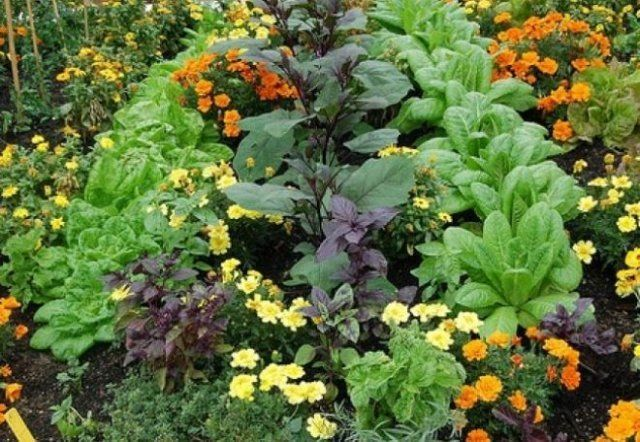
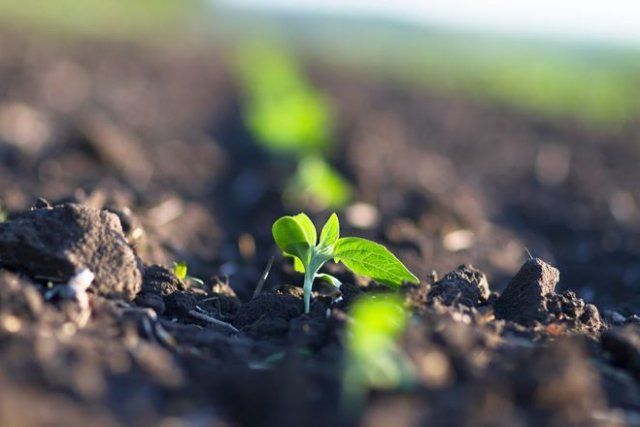

Способы улучшения плодородия
1. Использование дождевых червей

Любая почва – это земля с набором физических свойств (удельный и объемный вес, пористость, твердость, связность, пластичность, спелость) и функциональных особенностей (водных, воздушных, тепловых). Именно от функций почвы, т.е. способности связывать и перенаправлять к корням минеральные вещества, впитывать, удерживать и сохранять влагу и зависит ее плодородность. "Богатая" почва имеет четкую структуру и состоит из небольших комков диаметром 0,25 мм. Именно на такой "основе" и можно выращивать растения.
Дождевые черви
Оптимальная влажность почвы, необходимая для жизни дождевых червей, составляет 75-85%, поэтому постоянно поливайте участок
К счастью, не нужно просеивать каждый ком земли через мелкое сито. Естественными "культиваторами" почвы являются дождевые черви. Они перерабатывают компост и навоз быстрее любых микроорганизмов, попутно "переваривая" и измельчая комья земли. В результате деятельности червей образуется биогумус – натуральное удобрение без запаха, которое выступает гарантом отличного урожая и экологически чистых продуктов. А еще дождевые черви не подвержены эпидемиям, не являются разносчиками заболеваний, и при благоприятных условиях в 1 куб.м грунта может жить колония до 500 особей. Соответственно, увеличивается и скорость переработки почвы, и она всегда будет плодородной.
Оптимальная влажность почвы, необходимая для жизни дождевых червей, составляет 75-85%, поэтому постоянно поливайте участок
2. Органические удобрения

В первую очередь органика – это, конечно, хороший компост.
Но помимо старой доброй компостной кучи, есть и другие варианты органических удобрений. Например, можно приготовить оригинальное жидкое удобрение, рецептом которого поделилась одна из наших читательниц. На солнечное место поставьте бочку для сбора дождевой воды или иную емкость и накройте ее крышкой. Соберите любые растения, на которые упадет взгляд: одуванчик, подорожник, клевер, крапиву, мокрицу и др. Измельчите их и поместите в емкость с водой, дайте составу настояться и забродить в течение 10 дней.Не отказывайтесь и от приготовления компоста методом холодной ферментации. Рецепт его такой: уложите слоями срезанные ветки, сухие листья, овощные очистки, кофейную гущу, ненужную бумагу и присыпьте все это землей. Примерно через год компост созреет, и его можно будет использовать.
Не бросайте в компостную кучу растения, зараженные болезнями, и сорняки с семенами. Такое органическое удобрение может погубить весь урожай!
3. Высаживание сидератов

Сидераты неслучайно называют "зеленым удобрением". Они обогащают почву азотом, фосфором, калием и кальцием. Улучшают характеристики почвы, помогают ей "дышать" и получать достаточное количество влаги. Сидераты не позволяют размножаться вредным микроорганизмам, но привлекают полезные бактерии. Также люпины и их разновидности снижают кислотность почвы и сохраняют ее от выветривания.
Лучшими сидератами считаются горчица, редька, гречиха, большинство видов бобовых (в том числе горох) и злаковых (ячмень, рожь, пшеница).
4. Севооборот

Длительное возделывание одной и той же культуры обедняет почву и приводит к снижению химических и физических свойств грунта. Если постоянно высаживать на одном месте капусту, это вызовет повышение уровня кислотности почвы. Ежегодные посадки лука на одном месте вызывают рост популяции нематод и т.д. Чтобы этого не происходило, и существует севооборот – ежегодное чередование культур, высаживаемых на одном месте.Почва буквально "устает" от взаимодействия с одной и той же культурой. В ней накапливаются колины – побочные продукты жизнедеятельности растений. Например, яблоня выделяет газ этилен, который задерживает рост семян других растений. Самыми "токсичными" являются капуста, томаты, сладкий перец, морковь и огурцы. Чтобы дать почве возможность самовосстанавливаться и поддерживать оптимальный состав микроэлементов, нужно ежегодно чередовать посадку различных культур.
5. Смешанные посадки

Отличный способ поддерживать здоровый баланс почвы – посадить рядом несколько культур. Хорошими "компаньонами" считаются пряные и лечебные травы. Было установлено, что близкая посадка укропа улучшает вкус свеклы, лука и зеленого горошка. Петрушка положительно влияет на томаты, кориандр, мята и тмин – на картофель и т.д.Главное правило смешанных посадок – нельзя размещать рядом культуры, относящиеся к одному семейству. Также следует избегать соседства высокорослых растений с низкорослыми, иначе первые будут заслонять солнце. Необходимо учитывать и любовь отдельных растений к солнцу и тени и высаживать рядом культуры с одинаковой потребностью в освещении.
При смешанных посадках одна культура является доминирующей, а вторая – вспомогательной
6. Дайте земле отдохнуть!

Почва – это не бездонный сосуд, из которого можно выжимать все до последней капли. Иногда просто необходимо дать участку отдохнуть, побыть "под паром" на протяжении года. На 6 сотках организовать это непросто, но можно найти соломоново решение: разделить участок на две части и в первый год дать отдохнуть одной части, а в следующий – другой.В деревнях люди давно знают – земля сама скажет, когда ей нужно отдохнуть. Если на протяжении двух сезонов подряд при благоприятных погодных условиях, регулярном внесении удобрений и отсутствии вредителей урожая нет – значит, почва истощена. Вот тогда-то и нужно оставить ее "под паром", не забывая, впрочем, регулярно вносить органические удобрения. И буквально за сезон почва восстановится и оздоровится.
Иногда почве надо отдохнуть и два сезона подряд